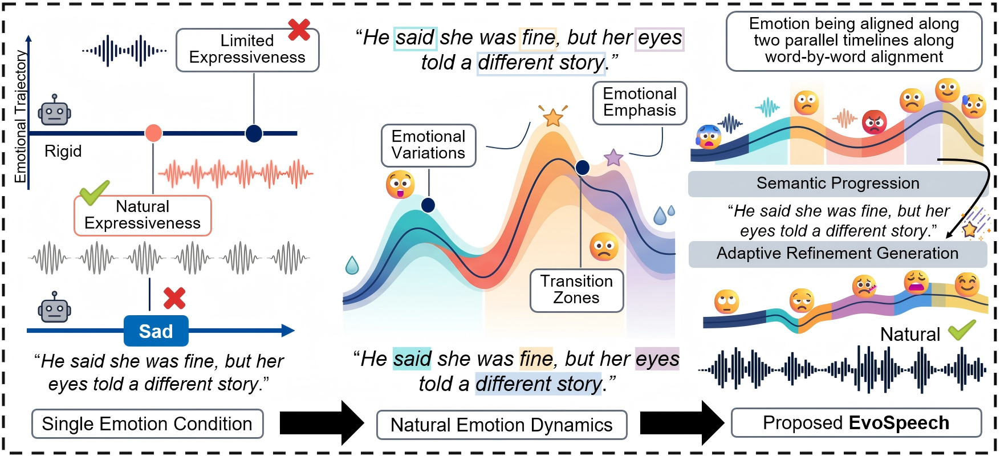

EvoSpeech: Semantically Aligned Emotional Evolution Modeling for Zero-Shot Text-to-Speech

Abstract
While recent advancements in zero-shot Text-to-Speech (TTS) excel at enhancing acoustic identities, they consistently fall short in synthesizing the dynamic, fluid nature of human emotion. Prior works predominantly treat emotion as a static, utterance-level condition, resulting in rigid expressions that fail to adapt to local semantic shifts and fail to capture the fine-grained, intra-utterance transitions driven by changing semantic contexts. In this work, we present EvoSpeech, a dual-timescale architecture that dynamically maps semantic intent to natural and expressive speech. Operating along the semantic-time axis, our method constructs a context-aware affective trajectory to guide fine-grained emotional allocation across local text units, effectively mitigating the entanglement between transient emotional variations and speaker timbre. Concurrently, along the generation-time axis, we introduce an adaptive acoustic rendering strategy driven by Conditional Flow Matching (CFM) and preference optimization to balance expressive intensity with zero-shot stability, preserving the important speech features during complex emotional transitions. We further evaluate our performance on LibriTTS-R, ETD, and Expresso across basic, complex, and cross-speaker transfer scenarios against state-of-the-art baselines. EvoSpeech achieves superior transition coherence, fine-grained controllability, and zero-shot fidelity, thereby establishing a robust new paradigm for dynamically evolving emotional speech synthesis.

Audio Demonstrations
1. Core Innovation: Dynamic Emotional Evolution vs Static TTS
We design a subjective test to verify that our model can generate semantically aligned dynamic emotional evolution, distinct from the static utterance-level emotion modeling in prior works. Participants are asked to perceive the emotional flow along the semantic context, and the results show that EvoSpeech produces more natural and context-consistent emotional transitions compared to baseline models.
Sentence 1: He said she was fine, but her eyes told a different story.
| Emotion | Emphasized Word | VALL-E 2 | F5-TTS | CosyVoice | WeSCon | EmoVoice | EvoSpeech (Ours) ∇F0 ↑ |
|---|---|---|---|---|---|---|---|
| Neutral | fine / eyes | ||||||
| Sad | eyes / different story | ||||||
| Surprise | fine / told | ||||||
| Angry | said / different story | ||||||
| Happy | fine / eyes |
Sentence 2: I can't believe he left me alone in this cold night.
| Emotion | Emphasized Word | VALL-E 2 | F5-TTS | CosyVoice | WeSCon | EmoVoice | EvoSpeech (Ours) ∇F0 ↑ |
|---|---|---|---|---|---|---|---|
| Neutral | believe / left | ||||||
| Sad | alone / cold | ||||||
| Surprise | believe / left | ||||||
| Angry | left / alone | ||||||
| Happy | believe / night |
2. Dual-Timescale Architecture Capability
We evaluate the two core capabilities of our dual-timescale architecture: (1) semantic-time axis: fine-grained emotion allocation aligned with semantic keywords; (2) generation-time axis: zero-shot speaker identity preservation under extreme emotional expressions. Both capabilities are verified to outperform state-of-the-art baselines across multiple datasets.
2.1 Semantic-Time Axis: Word-Level Fine-Grained Allocation
| Emotion | Test Sentence | Emphasized Word | VALL-E 2 | F5-TTS | CosyVoice | WeSCon | EmoVoice | EvoSpeech (Ours) ASCS ↑ |
|---|---|---|---|---|---|---|---|---|
| Neutral | The party was fun, but I felt lonely. | fun / lonely | ||||||
| Sad | She laughed with tears, saying I miss you. | tears / miss | ||||||
| Angry | Don't leave me here alone! | Don't / alone | ||||||
| Happy | I finally found the lost bracelet! | finally / found | ||||||
| Surprise | I was confused, then surprised, finally disappointed. | confused / surprised / disappointed |
2.2 Generation-Time Axis: Zero-Shot Speaker Fidelity (Extreme Emotion)
We test speaker consistency under high-intensity emotions (Angry/Excited) to verify that our adaptive acoustic rendering preserves target speaker identity without distortion, even when emotional intensity is extreme.
| Emotion | Test Sentence | VALL-E 2 | F5-TTS | CosyVoice | WeSCon | EmoVoice | EvoSpeech (Ours) SECS ↑ |
|---|---|---|---|---|---|---|---|
| Angry | Get away from me! | ||||||
| Excited | We won the championship! | ||||||
| Sad | My favorite pet passed away. | ||||||
| Surprise | You prepared such a big gift for me! | ||||||
| Happy | I'm so happy to see you again after 10 years! |
3. Complex Scenario Evaluation (Expresso Dataset)
We evaluate our model on the Expresso dataset, which contains spontaneous emotional expressions (whisper, laugh+tear, shout, sigh) and compound emotions. The results demonstrate that EvoSpeech generates more natural and intelligible emotional speech in real-world complex scenarios, compared to baselines that struggle with non-standard vocalizations.
Compound Emotion + Spontaneous Micro-Expressions
| Scenario | Emotion Type | Test Sentence | VALL-E 2 | F5-TTS | CosyVoice | WeSCon | EmoVoice | EvoSpeech (Ours) Natural ↑ |
|---|---|---|---|---|---|---|---|---|
| Whisper | Affection+Shyness | I love you more than anything. | ||||||
| Laugh+Tear | Joy+Longing | She laughed with tears, saying I miss you. | ||||||
| Shout | Anger+Fear | Don't come near me! | ||||||
| Sigh | Sad+Regret | If only I could go back to the past. | ||||||
| Excited Talk | Happy+Surprise | I can't believe we actually made it! |
4. Cross-Speaker Zero-Shot Transfer
We verify the generalization ability of EvoSpeech to unseen speakers in a zero-shot setting, without any fine-tuning on target speakers. The results show that our model maintains stable emotional expression quality and speaker consistency across different genders and voice characteristics, outperforming baselines that degrade significantly on unseen speakers.
Unseen Male/Female Speakers
| Target Speaker | Emotion | Test Sentence | VALL-E 2 | F5-TTS | CosyVoice | WeSCon | EmoVoice | EvoSpeech (Ours) Stable ↑ |
|---|---|---|---|---|---|---|---|---|
| Female (Unseen) | Sad | He said she was fine, but her eyes told a different story. | ||||||
| Female (Unseen) | Happy | I finally found the lost bracelet! | ||||||
| Male (Unseen) | Angry | Don't leave me here alone! | ||||||
| Male (Unseen) | Surprise | You prepared such a big gift for me! | ||||||
| Male (Unseen) | Neutral | The party was fun, but I felt lonely. |